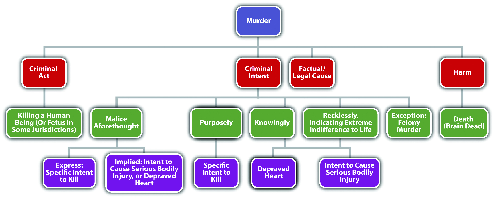

Murder is a crime that has the elements of criminal act, criminal intent, causation, and harm. In this section, you learn the elements of murder. In upcoming sections, you learn the factors that classify murder as first degree, felony, and second degree.
Most jurisdictions define the criminal act element of murder as conduct that causes the victim’s death.N.Y. Penal Law § 125.27, accessed February 4, 2011, http://law.onecle.com/new-york/penal/PEN0125.27_125.27.html. The criminal act could be carried out with a weapon, a vehicle, poison, or the defendant’s bare hands. Like all criminal acts, the conduct must be undertaken voluntarily and cannot be the result of a failure to act unless a duty to act is created by common law or statute.
It is the criminal intent element that basically separates murder from manslaughter. At common law, the criminal intent element of murder was malice aforethoughtIntent to kill, which is the common-law intent for murder.. In modern times, many states and the federal government retain the malice aforethought criminal intent.Cal. Penal Code § 187, accessed February 4, 2011, http://law.justia.com/california/codes/2009/pen/187-199.html. The Model Penal Code defines murder intent as purposely, knowingly, or recklessly under circumstances manifesting extreme indifference to the value of human life (Model Penal Code § 210.2).
An exception to the criminal intent element of murder is felony murder. Most jurisdictions criminalize felony murder, which does not require malice aforethought or the Model Penal Code murder mental states. Felony murder is discussed shortly.
Malice, as used in the term malice aforethought, is not the intent to vex or annoy. Nor is it hatred of the victim. Malice exists when the defendant desires the victim’s death or is indifferent to whether the victim lives or dies. Malice is apparent in three criminal homicide situations: the defendant intends to kill the victim, the defendant intends to cause serious bodily injury to the victim, or the defendant has a depraved heartThe defendant is indifferent to whether the victim lives or dies. Also called abandoned and malignant heart. and does not care if the victim lives or dies.
The specific intent to kill the victim corresponds with the Model Penal Code’s purposely murder mental state and is often referred to as express maliceThe defendant intends to kill the victim..N.R.S. § 200.020(1), accessed February 13, 2011, http://law.onecle.com/nevada/crimes/200.020.html. The intent to cause serious bodily injury corresponds with the Model Penal Code’s knowingly or recklessly murder mental states and is often referred to as implied maliceThe defendant intends to cause serious bodily injury or is acting with a depraved heart.. Serious bodily injury is a technical term and is generally defined in a state statute or by case law. The Model Penal Code defines serious bodily injury as “bodily injury which creates a substantial risk of death or which causes serious, permanent disfigurement, or protracted loss or impairment of the function of any bodily member or organ” (Model Penal Code § 210.0(3)). The depraved heart intent is also implied maliceN.R.S. § 200.020(2), accessed February 13, 2011, http://law.onecle.com/nevada/crimes/200.020.html. and corresponds with the Model Penal Code’s knowingly or recklessly murder mental states, depending on the attendant circumstances.
Jay decides he wants to kill someone to see what it feels like. Jay drives slowly up to a crosswalk, accelerates, and then runs down an elderly lady who is crossing the street. Jay is acting with the intent to kill, which would be express malice or purposely.
Jay wants to injure Robbie, a track teammate, so that he will be the best runner in the high school track meet. Jay waits for Robbie outside the locker room and when Robbie exits, Jay attacks him and stabs him several times in the knee. Unfortunately, one of Jay’s stabbing wounds is in the carotid artery, and Robbie bleeds to death. Jay is acting with the intent to cause serious bodily injury, which would be implied malice, or knowingly or recklessly under circumstances manifesting extreme indifference to the value of human life.
Jay is angry at Brittany for turning him down when he asks her to the senior prom. Jay decides to teach Brittany a lesson. He knocks her unconscious as she walks home from school and then drives her out to a deserted field and dumps her on the ground. He thereafter leaves, feeling vindicated at the thought of her walking over ten miles to the nearest telephone. Brittany does not regain consciousness and spends the entire night in the field, where temperatures drop to 5°F. Brittany dies of exposure and acute hypothermia. Jay acts with the intent of depraved heart, also called abandoned and malignant heart. This criminal intent is another form of implied malice, or knowingly or recklessly under circumstances manifesting extreme indifference to the value of human life.
The term aforethought at common law meant that the defendant planned or premeditated the killing. However, this term has lost its significance in modern times and does not modify the malice element in any way. Premeditation is a factor that can elevate murder to first-degree murder, as is discussed shortly.
The deadly weaponAny instrumentality that can kill when used in a manner calculated to cause death or serious bodily injury. doctrine creates an inference of murder intent when the defendant uses a deadly weapon.People v. Carines, 597 N.W. 2d 130 (1999), accessed February 13, 2011, http://scholar.google.com/scholar_case?case=6441565823584670121&q= deadly+weapon+doctrine&hl=en&as_sdt=2,5. A judge may instruct the jury that they can infer the defendant intended the natural and probable consequences of the criminal act, which are death when a deadly weapon is utilized. This basically alleviates the burden of having to prove criminal intent for murder.
A deadly weapon is any instrumentality that can kill when used in a manner calculated to cause death or serious bodily injury.Acers v. United States, 164 U.S. 388 (1896), accessed February 13, 2010, http://scholar.google.com/scholar_case?case=16538901276155737856&hl=en&as_sdt=2&as_vis=1&oi=scholarr. The Model Penal Code defines deadly weapon as “any firearm, or other weapon, device, instrument, material or substance, whether animate or inanimate, which in the manner it is used or is intended to be used is known to be capable of producing death or serious bodily injury” (Model Penal Code § 210.0 (4)). Some examples of deadly weapons are knives, guns, broken bottles, or even bare hands if there is a discrepancy in the size of the attacker and the victim. Aside from creating an inference of intent for murder, use of a deadly weapon may also enhance a sentence for certain crimes.
There is always a causation analysis for murder. The defendant must be the factual and legal cause of a very specific harm—the victim’s death. Causation issues in murder are numerous. If a state has a one or three years and a day rule, this could complicate the causation scenario when a victim’s life is artificially extended. One and three years and a day rules are discussed in detail in Chapter 4 "The Elements of a Crime". In addition, co-felon liability could extend criminal responsibility to defendants that did not actually kill the victim, as is discussed shortly.
As stated previously, the harm element of murder is a victim’s death. With the advent of life-sustaining machines, jurisdictions have had to develop a definition for the term dead. A victim is legally deadThe victim experiences cessation of the entire brain, including the brain stem. when there is irreversible cessation of the entire brain, including the brain stem.Uniform Determination of Death Act, accessed February 14, 2010, http://www.gencourt.state.nh.us/rsa/html/X/141-D/141-D-mrg.htm.
Figure 9.2 Diagram of Murder
As Blackstone stated, murder cannot be justified or excused. Justifiable and excusable homicides are noncriminal, and thus justification or excuse can operate as an affirmative defense in many jurisdictions. A thorough discussion of defenses based on justification and excuse is in Chapter 5 "Criminal Defenses, Part 1" and Chapter 6 "Criminal Defenses, Part 2".
A justifiable homicide is a homicide that is warranted under the circumstances. One example of a justifiable homicide is when a law enforcement officer shoots and kills a fleeing felon to prevent imminent great bodily injury or death. This killing is intentional and purposeful with malice aforethought, but it is noncriminal. The justification negates the criminality and the law enforcement officer will not be convicted of murder. A complete discussion of use of deadly force by law enforcement to arrest or apprehend a criminal defendant is in Chapter 5 "Criminal Defenses, Part 1". Other murder defenses based on justification are self-defense, defense of others, and defense of habitation.
An excusable homicide is a homicide that society forgives or pardons. One example of an excusable homicide is a homicide committed by a defendant who is found legally insane. This killing could also be intentional and purposeful with malice aforethought, but it is noncriminal. The excuse negates the criminality and the defendant will not be convicted of murder. A complete discussion of the insanity defense is in Chapter 6 "Criminal Defenses, Part 2".
The criminal transmission of AIDS is a new and evolving topic with state and federal courts and criminal codes. Many jurisdictions have statutes specifying that death by the deliberate transmission of AIDS is murder because murder intent is present.Minn. Stat. Ann. § 609.2241, accessed February 24, 2010, https://www.revisor.mn.gov/statutes/?id=609.2241. Death by the inadvertent transmission of AIDS is more likely manslaughter, although modern courts could begin to imply malice or murder intent in this situation. For states that follow the one or three years and a day rule, the time limit could affect any murder or manslaughter charge because medical breakthroughs have extended the life span of AIDS victims significantly.
Table 9.1 Murder Rate in the United States: Percent Change January–December
| Years | Percent Change/Murder Rate |
|---|---|
| 2006/2005 | +1.8 |
| 2007/2006 | −0.6 |
| 2008/2007 | −3.9 |
| 2009/2008 | −7.2 |
Source: Department of Justice, “Crime in the United States; Preliminary Annual Uniform Crime Report,” accessed July 28, 2010, http://www.fbi.gov/ucr/prelimsem2009/table_3.html.
Answer the following questions. Check your answers using the answer key at the end of the chapter.